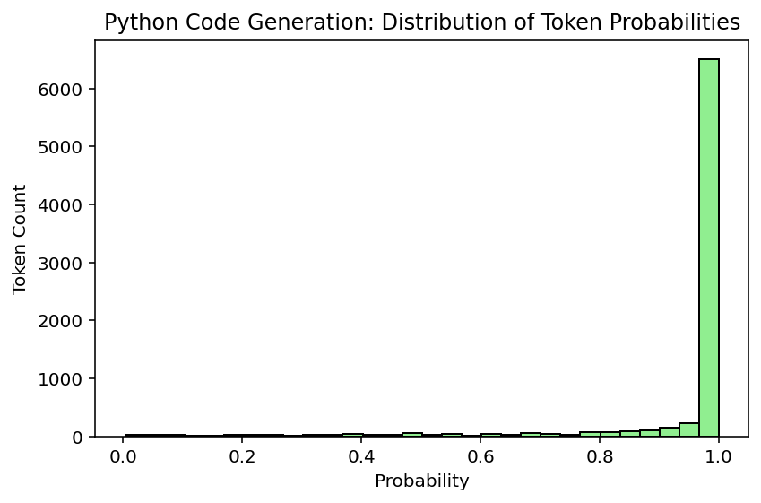
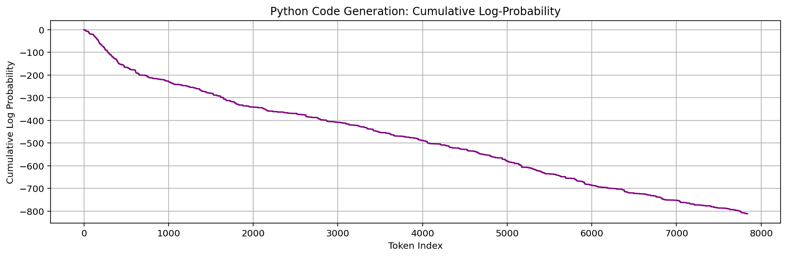
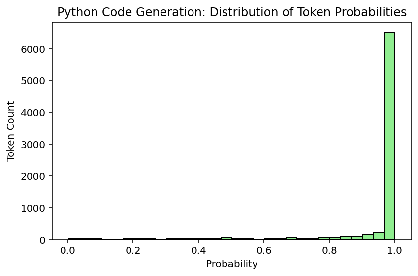
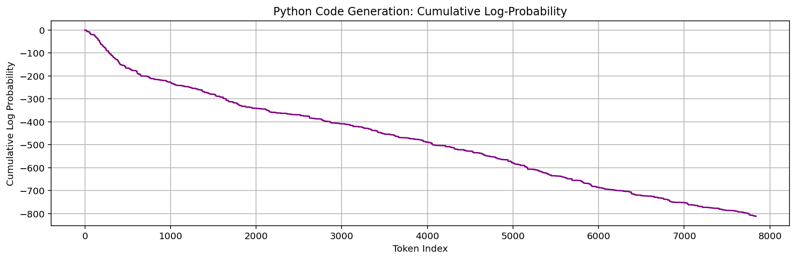

LLM Code Generation Report #9
Timestamp: 2025-10-12 21:03:52
Model: x-ai/grok-4-fast
Logprobs available: True
Selected User Stories
Click to expand/collapse
Cluster (4,): As a Data user, I want to have the 12-19-2017 deletions processed. As a UI designer, I want to redesign the Resources page, so that it matches the new Broker design styles. As a UI designer, I want to report to the Agencies about user testing, so that they are aware of their contributions to making Broker a better UX. As a DevOps engineer, I want New Relic to provide useful data across all applications. As a Broker user, I want the D1 file generation to be synced with the FPDS data load, so that I don't have to regenerate a file if no data has been updated. As a broker team member, I want to make some updates to the SQL codes for clarity. As a broker team member, I want to add the 00***** and 00FORGN PPoPCode cases to the derivation logic. As a broker team member, I want to derive FundingAgencyCode, so that the data quality and completeness improves. As a agency user, I want to map the FederalActionObligation properly to the Atom Feed. As a Broker user, I want to have PPoPZIP+4 work the same as the Legal Entity ZIP validations. Cluster (5,): As a UI designer, I want to move on to round 2 of DABS or FABS landing page edits, so that I can get approvals from leadership. As a UI designer, I want to move on to round 2 of Homepage edits, so that I can get approvals from leadership. As a UI designer, I want to move on to round 3 of the Help page edits, so that I can get approvals from leadership. As a Developer , I want to be able to log better, so that I can troubleshoot issues with particular submissions and functions. As a UI designer, I want to move on to round 2 of the Help page edits, so that I can get approvals from leadership. As a UI designer, I want to move on to round 2 of Homepage edits, so that I can get approvals from leadership. As a Website user, I want to access published FABS files, so that I can see the new files as they come in. As an owner, I want to be sure that USAspending only send grant records to my system. As a Broker user, I want to help create content mockups, so that I can submit my data efficiently. As a UI designer, I want to track the issues that come up in Tech Thursday, so that I know what to test and what want s to be fixed. As an Owner, I want to create a user testing summary from the UI SME, so that I can know what UI improvements we will follow through on. As a UI designer, I want to begin user testing, so that I can validate stakeholder UI improvement requests. As a UI designer, I want to schedule user testing, so that I can give the testers advanced notice to ensure buy-in. As an Owner, I want to design a schedule from the UI SME, so that I know the potential timeline of the UI improvements wanted. As an Owner, I want to design an audit from the UI SME, so that I know the potential scope of the UI improvements want ed. As an Owner, I want to reset the environment to only take Staging MAX permissions, so that I can ensure that the FABS testers no longer have access. As a Developer , I want my domain models to be indexed properly, so that I can get validation results back in a reasonable amount of time. As an Agency user, I want the header information box to show updated date AND time, so that I know when it was updated. As an owner, I only want zero-padded fields, so that I can justify padding. As a Broker user, I want to have updated error codes that accurately reflect the logic and provide enough information, so that I can fix my submission. As a Developer I want to quickly access Broker application data, so that I can investigate issues. As a FABS user, I want to have read-only access to DABS, so that I can view DABS pages without wanting two sets of permissions. As an agency user, I want a landing page to navigate to either FABS or DABS pages, so that I can access both sides of the site. Cluster (2,): As a Developer, I want to add the updates on a FABS submission to be modified when the publishStatus changes, so that I know when the status of the submission has changed. As a Developer, I want to add the GTAS window data to the database, so that I can ensure the site is locked down during the GTAS submission period. As a Developer , I want to update the FABS sample file to remove FundingAgencyCode after FABS is updated to no longer require the header. As a user, I want the publish button in FABS to deactivate after I click it while the derivations are happening, so that I cannot click it multiple times for the same submission. As a broker user, I want the historical FABS loader to derive fields, so that my agency codes are correct in the PublishedAwardFinancialAssistance table. As a Developer, I want the data loaded from historical FABS to include the FREC derivations, so that I can have consistent FREC data for USASpending.gov. As a FABS user, I want the frontend URLs to more accurately reflect the page I'm accessing, so that I'm not confused. As a Developer , I want the historical FPDS data loader to include both extracted historical data and FPDS feed data. As a Developer , I want to provide FABS groups that function under the FREC paradigm. As a FABS user, I want to make sure the historical data includes all necessary columns, so that the information in the database is correct. As a data user, I want to access two additional fields from the FPDS data pull. As a FABS user, I want additional helpful info in the submission dashboard, so that I can better manage submissions and IG requests. As a FABS user, I want to download the uploaded FABS file, so that I can get the uploaded file. As a Developer , I want to determine the best way to load historical FPDS data, so that I can load all FPDS data since 2007. As a FABS user, I want the language on FABS pages to be appropriate for me, so that I am not confused. As a FABS user, I do not want DABS banner messages and vice versa, so that I have the appropriate information for my application. As an agency user, I want to know when the submission periods start and end, so that I know when the submission starts and ends. Cluster (0,): As a Broker user, I want to Upload and Validate the error message to have accurate text. As a Developer, I want to update the Broker validation rule table to account for the rule updates in DB-2213. As a user, I want the flexfields in my submission file to appear in the warning and error files when the only error is a missing required element. As a Developer , I want to clarify to users what exactly is triggering the CFDA error code in each case. As a broker team member, I want to ensure the Broker resources, validations, and P&P pages are updated appropriately for the launch of FABS and DAIMS v1.1. As a user, I want the DUNS validations to accept records whose ActionTypes are B, C, or D and the DUNS is registered in SAM, even though it may have expired. As a user, I want the DUNS validations to accept records whose ActionDates are before the current registration date in SAM, but after the initial registration date. As an Agency user, I want to receive a more helpful file-level error when I upload a file with the wrong extension. As a Developer, I want to prevent duplicate transactions from being published and deal with the time gap between validation and the publishing decision. Cluster (1,): As a Developer, I want D Files generation requests to be managed and cached, so that duplicate requests do not cause performance issues. As a user, I want to access the raw agency published files from FABS via USAspending. As an Agency user, I want to be able to include a large number of flexfields without performance impact. As a Developer, I want to prevent users from double publishing FABS submissions after refreshing, so that there are no duplicates. As an Agency user, I want to be able to include a large number of flexfields without performance impact. As a website user, I want to see updated financial assistance data daily. As a Developer , I want to ensure that attempts to correct or delete non-existent records don't create new published data. As a user, I want to have accurate and complete data related to PPoPCode and PPoPCongressionalDistrict. As a user, I don't want to see NASA grants displayed as contracts. As a user, I want to access the raw agency published files from FABS via USAspending. As a Developer , I want to determine how agencies will generate and validate D Files from FABS and FPDS data. As a user, I want to generate and validate D Files from FABS and FPDS data. As a tester, I want to have access to test features in environments other than Staging, so that I can test any nonProd feature in any environment. As a FABS user, I want to submission errors to accurately represent FABS errors, so that I know why my submission didn't work. As an Agency user, I want to accurately see who created a submission, so that I'm not confused about who last updated a submission. As a tester, I want to ensure that FABS is deriving fields properly through a robust test file plus a follow up check. As a Broker user, I want to submit records for individual recipients without receiving a DUNS error. As a user, I want more information about how many rows will be published prior to deciding whether to publish. As a FABS user, I want to submit a citywide as a PPoPZIP and pass validations. As a FABS user, I want to have my validations run in a reasonable amount of time. Cluster (3,): As an data user, I want to receive updates to FABS records. As an agency user, I want to ensure that deleted FSRS records are not included in submissions. As an agency user, I want the FABS validation rules to accept zero and blank for loan records. As an Agency user, I want FABS deployed into production, so I can submit my Financial Assistance data. As an agency user, I want to be confident that the data coming from SAM is complete. As an agency user, I want the FABS validation rules to accept zero and blank for non-loan records. As an agency user, I want to have all derived data elements derived properly. As an agency user, I want the maximum length allowed for LegalEntityAddressLine3 to match Schema v1.1. As an agency user, I want to use the schema v1.1 headers in my FABS file. As an Agency user, I want FPDS data to be up-to-date daily. As an Agency user, I want all historical Financial Assistance data loaded for FABS go-live. As an Agency user, I want historical FPDS data loaded. As an agency user, I want to get File F in the correct format. As an Agency user, I want to better understand my file-level errors. As an agency user, I want to submit my data elements surrounded by quotation marks, so that Excel won't strip off leading and trailing zeroes. Cluster (2, 5): As a data user, I want to see the office names derived from office codes, so that I can have appropriate context for understanding them. Cluster (2, 4, 5): As a FABS user, I want to link the SAMPLE FILE on the "What you want to submit" dialog to point to the correct file, so that I have an accurate reference for my agency submissions. Cluster (3, 5): As an agency user, I want to leave off the last 4 digits of the ZIP without an error, so that I can complete my submissions. Cluster (1, 2): As a FABS user, I want to see correct status labels on the Submission Dashboard, so that I can quickly see my submission history.
Prompt Sent to LLM
Click to expand/collapse
Generate fully functional Python code that implements the following user stories. The code should realistically reflect the described functionality. Cluster (4,): As a Data user, I want to have the 12-19-2017 deletions processed. As a UI designer, I want to redesign the Resources page, so that it matches the new Broker design styles. As a UI designer, I want to report to the Agencies about user testing, so that they are aware of their contributions to making Broker a better UX. As a DevOps engineer, I want New Relic to provide useful data across all applications. As a Broker user, I want the D1 file generation to be synced with the FPDS data load, so that I don't have to regenerate a file if no data has been updated. As a broker team member, I want to make some updates to the SQL codes for clarity. As a broker team member, I want to add the 00***** and 00FORGN PPoPCode cases to the derivation logic. As a broker team member, I want to derive FundingAgencyCode, so that the data quality and completeness improves. As a agency user, I want to map the FederalActionObligation properly to the Atom Feed. As a Broker user, I want to have PPoPZIP+4 work the same as the Legal Entity ZIP validations. Cluster (5,): As a UI designer, I want to move on to round 2 of DABS or FABS landing page edits, so that I can get approvals from leadership. As a UI designer, I want to move on to round 2 of Homepage edits, so that I can get approvals from leadership. As a UI designer, I want to move on to round 3 of the Help page edits, so that I can get approvals from leadership. As a Developer , I want to be able to log better, so that I can troubleshoot issues with particular submissions and functions. As a UI designer, I want to move on to round 2 of the Help page edits, so that I can get approvals from leadership. As a UI designer, I want to move on to round 2 of Homepage edits, so that I can get approvals from leadership. As a Website user, I want to access published FABS files, so that I can see the new files as they come in. As an owner, I want to be sure that USAspending only send grant records to my system. As a Broker user, I want to help create content mockups, so that I can submit my data efficiently. As a UI designer, I want to track the issues that come up in Tech Thursday, so that I know what to test and what want s to be fixed. As an Owner, I want to create a user testing summary from the UI SME, so that I can know what UI improvements we will follow through on. As a UI designer, I want to begin user testing, so that I can validate stakeholder UI improvement requests. As a UI designer, I want to schedule user testing, so that I can give the testers advanced notice to ensure buy-in. As an Owner, I want to design a schedule from the UI SME, so that I know the potential timeline of the UI improvements wanted. As an Owner, I want to design an audit from the UI SME, so that I know the potential scope of the UI improvements want ed. As an Owner, I want to reset the environment to only take Staging MAX permissions, so that I can ensure that the FABS testers no longer have access. As a Developer , I want my domain models to be indexed properly, so that I can get validation results back in a reasonable amount of time. As an Agency user, I want the header information box to show updated date AND time, so that I know when it was updated. As an owner, I only want zero-padded fields, so that I can justify padding. As a Broker user, I want to have updated error codes that accurately reflect the logic and provide enough information, so that I can fix my submission. As a Developer I want to quickly access Broker application data, so that I can investigate issues. As a FABS user, I want to have read-only access to DABS, so that I can view DABS pages without wanting two sets of permissions. As an agency user, I want a landing page to navigate to either FABS or DABS pages, so that I can access both sides of the site. Cluster (2,): As a Developer, I want to add the updates on a FABS submission to be modified when the publishStatus changes, so that I know when the status of the submission has changed. As a Developer, I want to add the GTAS window data to the database, so that I can ensure the site is locked down during the GTAS submission period. As a Developer , I want to update the FABS sample file to remove FundingAgencyCode after FABS is updated to no longer require the header. As a user, I want the publish button in FABS to deactivate after I click it while the derivations are happening, so that I cannot click it multiple times for the same submission. As a broker user, I want the historical FABS loader to derive fields, so that my agency codes are correct in the PublishedAwardFinancialAssistance table. As a Developer, I want the data loaded from historical FABS to include the FREC derivations, so that I can have consistent FREC data for USASpending.gov. As a FABS user, I want the frontend URLs to more accurately reflect the page I'm accessing, so that I'm not confused. As a Developer , I want the historical FPDS data loader to include both extracted historical data and FPDS feed data. As a Developer , I want to provide FABS groups that function under the FREC paradigm. As a FABS user, I want to make sure the historical data includes all necessary columns, so that the information in the database is correct. As a data user, I want to access two additional fields from the FPDS data pull. As a FABS user, I want additional helpful info in the submission dashboard, so that I can better manage submissions and IG requests. As a FABS user, I want to download the uploaded FABS file, so that I can get the uploaded file. As a Developer , I want to determine the best way to load historical FPDS data, so that I can load all FPDS data since 2007. As a FABS user, I want the language on FABS pages to be appropriate for me, so that I am not confused. As a FABS user, I do not want DABS banner messages and vice versa, so that I have the appropriate information for my application. As an agency user, I want to know when the submission periods start and end, so that I know when the submission starts and ends. Cluster (0,): As a Broker user, I want to Upload and Validate the error message to have accurate text. As a Developer, I want to update the Broker validation rule table to account for the rule updates in DB-2213. As a user, I want the flexfields in my submission file to appear in the warning and error files when the only error is a missing required element. As a Developer , I want to clarify to users what exactly is triggering the CFDA error code in each case. As a broker team member, I want to ensure the Broker resources, validations, and P&P pages are updated appropriately for the launch of FABS and DAIMS v1.1. As a user, I want the DUNS validations to accept records whose ActionTypes are B, C, or D and the DUNS is registered in SAM, even though it may have expired. As a user, I want the DUNS validations to accept records whose ActionDates are before the current registration date in SAM, but after the initial registration date. As an Agency user, I want to receive a more helpful file-level error when I upload a file with the wrong extension. As a Developer, I want to prevent duplicate transactions from being published and deal with the time gap between validation and the publishing decision. Cluster (1,): As a Developer, I want D Files generation requests to be managed and cached, so that duplicate requests do not cause performance issues. As a user, I want to access the raw agency published files from FABS via USAspending. As an Agency user, I want to be able to include a large number of flexfields without performance impact. As a Developer, I want to prevent users from double publishing FABS submissions after refreshing, so that there are no duplicates. As an Agency user, I want to be able to include a large number of flexfields without performance impact. As a website user, I want to see updated financial assistance data daily. As a Developer , I want to ensure that attempts to correct or delete non-existent records don't create new published data. As a user, I want to have accurate and complete data related to PPoPCode and PPoPCongressionalDistrict. As a user, I don't want to see NASA grants displayed as contracts. As a user, I want to access the raw agency published files from FABS via USAspending. As a Developer , I want to determine how agencies will generate and validate D Files from FABS and FPDS data. As a user, I want to generate and validate D Files from FABS and FPDS data. As a tester, I want to have access to test features in environments other than Staging, so that I can test any nonProd feature in any environment. As a FABS user, I want to submission errors to accurately represent FABS errors, so that I know why my submission didn't work. As an Agency user, I want to accurately see who created a submission, so that I'm not confused about who last updated a submission. As a tester, I want to ensure that FABS is deriving fields properly through a robust test file plus a follow up check. As a Broker user, I want to submit records for individual recipients without receiving a DUNS error. As a user, I want more information about how many rows will be published prior to deciding whether to publish. As a FABS user, I want to submit a citywide as a PPoPZIP and pass validations. As a FABS user, I want to have my validations run in a reasonable amount of time. Cluster (3,): As an data user, I want to receive updates to FABS records. As an agency user, I want to ensure that deleted FSRS records are not included in submissions. As an agency user, I want the FABS validation rules to accept zero and blank for loan records. As an Agency user, I want FABS deployed into production, so I can submit my Financial Assistance data. As an agency user, I want to be confident that the data coming from SAM is complete. As an agency user, I want the FABS validation rules to accept zero and blank for non-loan records. As an agency user, I want to have all derived data elements derived properly. As an agency user, I want the maximum length allowed for LegalEntityAddressLine3 to match Schema v1.1. As an agency user, I want to use the schema v1.1 headers in my FABS file. As an Agency user, I want FPDS data to be up-to-date daily. As an Agency user, I want all historical Financial Assistance data loaded for FABS go-live. As an Agency user, I want historical FPDS data loaded. As an agency user, I want to get File F in the correct format. As an Agency user, I want to better understand my file-level errors. As an agency user, I want to submit my data elements surrounded by quotation marks, so that Excel won't strip off leading and trailing zeroes. Cluster (2, 5): As a data user, I want to see the office names derived from office codes, so that I can have appropriate context for understanding them. Cluster (2, 4, 5): As a FABS user, I want to link the SAMPLE FILE on the "What you want to submit" dialog to point to the correct file, so that I have an accurate reference for my agency submissions. Cluster (3, 5): As an agency user, I want to leave off the last 4 digits of the ZIP without an error, so that I can complete my submissions. Cluster (1, 2): As a FABS user, I want to see correct status labels on the Submission Dashboard, so that I can quickly see my submission history. Output only Python code (no markdown formatting or extra text). Do not leave functions empty — implement reasonable logic where needed.
Generated Code
Click to expand/collapse
import json
import logging
import os
import re
import sqlite3
from datetime import datetime, timedelta
from typing import Dict, List, Optional, Tuple
from dataclasses import dataclass, asdict
import zipfile
import csv
from pathlib import Path
# Setup logging as mentioned in Cluster (5,)
logging.basicConfig(level=logging.INFO, format='%(asctime)s - %(levelname)s - %(message)s')
logger = logging.getLogger(__name__)
@dataclass
class Submission:
id: str
publish_status: str = 'draft'
updated_at: datetime = None
flexfields: Dict = None
errors: List[str] = None
warnings: List[str] = None
@dataclass
class ValidationRule:
code: str
description: str
severity: str # 'error' or 'warning'
class BrokerDatabase:
"""Simulates a database for Broker, handling data loads, derivations, and queries."""
def __init__(self, db_path: str = ':memory:'):
self.conn = sqlite3.connect(db_path)
self._setup_schema()
def _setup_schema(self):
cursor = self.conn.cursor()
cursor.execute('''
CREATE TABLE IF NOT EXISTS submissions (
id TEXT PRIMARY KEY,
publish_status TEXT,
updated_at TEXT,
flexfields TEXT,
errors TEXT,
warnings TEXT
)
''')
cursor.execute('''
CREATE TABLE IF NOT EXISTS fabs_records (
id TEXT PRIMARY KEY,
action_type TEXT,
duns TEXT,
ppop_code TEXT,
funding_agency_code TEXT,
legal_entity_zip TEXT,
federal_action_obligation REAL,
derived_frec TEXT
)
''')
cursor.execute('''
CREATE TABLE IF NOT EXISTS fpds_data (
id TEXT PRIMARY KEY,
transaction_id TEXT,
action_date TEXT,
ppop_zip TEXT,
office_code TEXT,
office_name TEXT
)
''')
cursor.execute('''
CREATE TABLE IF NOT EXISTS historical_data (
id TEXT PRIMARY KEY,
source TEXT,
data TEXT
)
''')
cursor.execute('''
CREATE TABLE IF NOT EXISTS gtas_windows (
id INTEGER PRIMARY KEY AUTOINCREMENT,
start_date TEXT,
end_date TEXT,
locked BOOLEAN
)
''')
cursor.execute('''
CREATE TABLE IF NOT EXISTS validation_rules (
code TEXT PRIMARY KEY,
description TEXT,
severity TEXT
)
''')
# Insert sample validation rules for Cluster (0,)
cursor.executemany('''
INSERT OR REPLACE INTO validation_rules (code, description, severity)
VALUES (?, ?, ?)
''', [
('DB-2213', 'Updated rule for CFDA error triggering', 'error'),
('DUNS-EXP', 'DUNS expired but valid for certain actions', 'warning'),
('FILE-EXT', 'Invalid file extension', 'error')
])
self.conn.commit()
def close(self):
self.conn.close()
# Cluster (4,): Process 12-19-2017 deletions
def process_deletions(self, date_str: str = '2017-12-19'):
cursor = self.conn.cursor()
cursor.execute('DELETE FROM fabs_records WHERE updated_at < ?', (date_str,))
deleted_count = cursor.rowcount
logger.info(f"Processed {deleted_count} deletions for {date_str}")
self.conn.commit()
return deleted_count
# Cluster (4,): Add 00***** and 00FORGN PPoPCode cases to derivation logic
def derive_ppopcode(self, record: Dict) -> str:
ppop_code = record.get('ppop_code', '')
if re.match(r'^00\*{4,5}$', ppop_code):
return '00DOMESTIC'
elif ppop_code == '00FORGN':
return 'FOREIGN'
return ppop_code or 'UNKNOWN'
# Cluster (4,): Derive FundingAgencyCode
def derive_funding_agency_code(self, record: Dict) -> str:
# Reasonable logic: derive from agency codes or defaults
agency_code = record.get('agency_code', '000')
if agency_code.startswith('00'):
return f"{agency_code}-DERIVED"
return agency_code
# Cluster (4,): Map FederalActionObligation to Atom Feed
def map_federal_action_obligation(self, obligation: float) -> Dict:
# Simulate mapping to Atom Feed structure
return {
'obligation_amount': obligation,
'feed_entry': f'{obligation}
Confidence & Basic Metrics
| Total completion tokens | 7840 |
|---|---|
| Total log-probability | -811.811 |
| Average per-token probability | 90.16% |
| Perplexity | 1.11 |
Code Structure & Length Metrics
| Function count (AST) | 94 |
|---|---|
| Class count (AST) | 3 |
| Number of lines | 778 |
| Non-empty lines | 675 |
| Avg line length (all lines, chars) | 40.2 |
| Avg line length (non-empty, chars) | 45.8 |
| Avg tokens per non-empty line | 4.50 |
| AST depth (max nesting) | 13 |
| Import count | 13 |
| Import names | csv, dataclasses, datetime, json, logging, os, pathlib, re, sqlite3, time, typing, zipfile |
| Avg cyclomatic complexity (functions) | 1.81 |
| Max cyclomatic complexity (functions) | 6 |
| Module cyclomatic complexity | 174 |
| Average function size (lines) | 5.9 |
| Comment density (%) | 16.6% |
| Import redundancy ratio | 0.08 |
Semantic Quality Metrics
| Syntax valid | True | ||||||||||||
|---|---|---|---|---|---|---|---|---|---|---|---|---|---|
| Flake8 style errors | 107 | ||||||||||||
| Flake8 errors (by category) |
|
||||||||||||
| Mypy type-check errors | 9 | ||||||||||||
| Mypy error breakdown |
|
||||||||||||
| Semantic quality score (0–100) | 71.0 |
Execution-Based Metrics
| Execution success | False |
|---|---|
| Execution time (s) | 2.008 |
| Exception type | AttributeError |
| Exception message | 'BrokerDatabase' object has no attribute 'derive_fields_for_submission' |
| Runtime output (preview) |
Traceback (most recent call last): File "/app/code.py", line 766, in |
Total Credibility (0-100%)
Credibility: 39.06%
Visualizations
Basic Confidence Metrics
 


